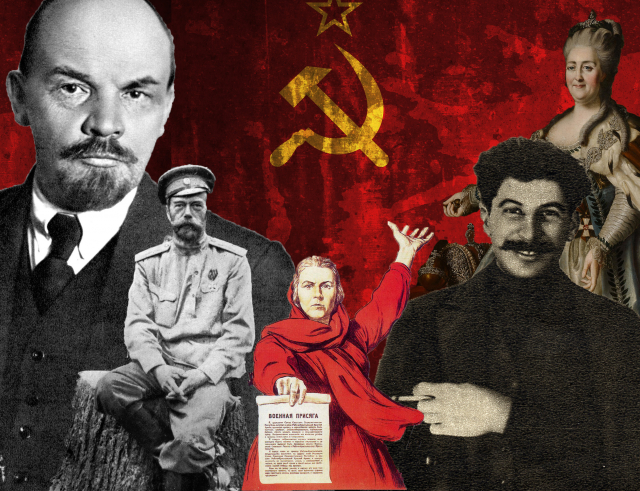

Kazakhstan as The Part of USSR (1922 - 1991)



Historical Events
Kazakhstan's history as a part of the Soviet Union spans several decades, from the establishment of the Soviet state in 1922 to its eventual dissolution in 1991. During this period, Kazakhstan underwent significant transformations, experiencing both economic and social changes, as well as playing a crucial role in the Soviet Union's geopolitical landscape.
- Formation of the Kazakh Soviet Socialist Republic (SSR): On December 5, 1936, the Kazakh SSR was officially established as one of the constituent republics of the Soviet Union. Prior to this, Kazakhstan had experienced a series of administrative changes and had been part of the Russian Soviet Federative Socialist Republic (RSFSR).
- Collectivization and Famine of the 1930s: The Soviet policy of collectivization, aimed at consolidating individual farms into collective and state farms, had a profound impact on Kazakhstan. The forced collectivization resulted in widespread disruption to traditional nomadic herding practices and led to a devastating famine in the early 1930s, causing significant loss of life.
- World War II: During World War II, Kazakhstan played a crucial role in supporting the Soviet war effort. Many industries were relocated to Kazakhstan from the western part of the Soviet Union to protect them from the advancing German forces. The city of Almaty (then Alma-Ata) became the temporary capital of the Soviet Union from 1929 to 1941.
- The Virgin Lands Campaign: In the late 1950s and early 1960s, the Soviet government initiated the Virgin Lands Campaign to boost agricultural production. Large areas of previously unused land in Kazakhstan were cultivated, attracting migrants from other parts of the Soviet Union.
- Baikonur Cosmodrome: In 1955, the Baikonur Cosmodrome was established in Kazakhstan, becoming the launch site for many historic space missions, including the first human spaceflight by Yuri Gagarin in 1961.
- Nuclear Testing: The Soviet Union conducted a significant number of nuclear tests in the Semipalatinsk Test Site, located in northeastern Kazakhstan, from 1949 to 1989. These tests had severe environmental and health consequences for the local population.
- Era of Leonid Brezhnev: The leadership of Leonid Brezhnev from the mid-1960s to the early 1980s marked a period of stability in the Soviet Union. Kazakhstan experienced economic growth, industrial development, and urbanization during this time.
- Ethnic and Cultural Changes: The Soviet period brought about significant demographic changes in Kazakhstan, with a diverse population representing various ethnic groups. The policies of Russification had a lasting impact on the cultural and linguistic landscape of the country.
- Perestroika and Independence: In the late 1980s, under the leadership of Mikhail Gorbachev, the Soviet Union underwent a period of political and economic restructuring known as perestroika. This period of openness and reform contributed to the rise of nationalist movements in Soviet republics, including Kazakhstan. On December 16, 1991, Kazakhstan declared its independence following the dissolution of the Soviet Union.